概率论
Table of Contents
1 随机事件
- 互斥、对立（相加为全集）、独立
- 相互独立（n个独立）、两两独立（任意两个独立）
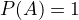
不能推出A是全集；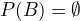
不能推出A是空集 连续概率密度- 易错点：没有条件概率的条件概率这种定义（贝叶斯公式使用）
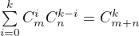
2 一维随机变量及其分布
- 分布函数的性质（充要条件）:单调不减 右连续 最左为0，最右为1
离散型随机变量分布
分布 概率分布 期望 方差 0-1 分布 B(1, p) 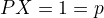
p p(1-p) 二项分布 B(n, p) 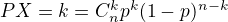
np np(1-p) 泊松分布 P(  )
)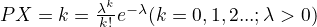
几何分布 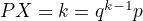
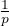
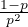
超几何分布 H(n, N, M) 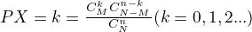
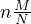
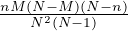
- 泊松定理：当n很大，p很小，
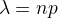
适中时，泊松分布可近似表示二项分布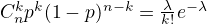
连续型随机变量
分布 密度函数 分布函数 期望 方差 均匀分布U(a,b) 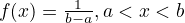
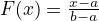
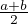
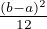
指数分布 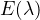
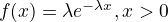
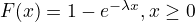
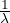
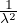
正态分布N(μ, σ2) 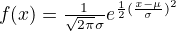
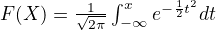

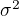
- 技巧 正态函数的比较需要换做标准正态解决
- 连续行随机变量的分布函数一定是连续的；离散型随机变量分布一定是阶梯型函数
- 易错点 写密度函数或者分布函数不要忘记写其他情况（为0或为1）
3 二维随机变量
- 条件分布函数：
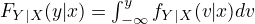
- 二维正态随机变量
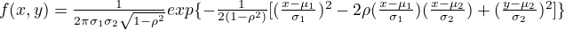
- X Y 的条件分布也都是正态分布
- aX+bY 也是正态分布
- X Y 相互独立的充要条件是X和Y不相关（其他分布没有这个性质）
- 技巧 求离散型的随机分布直接求某点的概率P即可
- 相互独立随机变量函数的分布
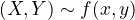
- 可以先求出
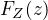
的随机变量 - 和的分布
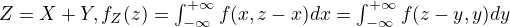
- 差的分布
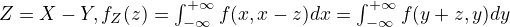
- 积的分布
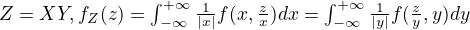
- 商的分布
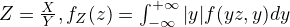
- 可以先求出
- 常见分布的可加性（相互独立）
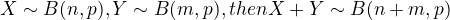
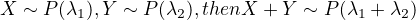
（证明需要用到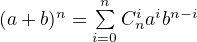
）
- 技巧 一个离散型，一个连续型随机变量分布问题，先确定随机变量的分布范围；再按照离散型变量分情况求概率，注意两个变量是否属于包含情况或者不是独立
4 随机变量的数字特征
- 数学期望E(X)如果不收敛，那么期望不存在（无穷）
- 期望的实际意义：概率的平均值（非样本）
- 期望相关公式
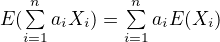
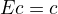
（均值为常数c）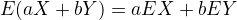
- 当X Y相互独立，
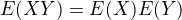
- 方差的实际意义：概率分布的离散程度
- 方差相关公式
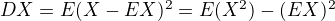
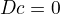
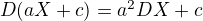
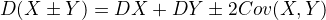
- 对于任意常数，
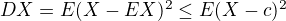
- 切比雪夫不等式
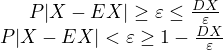
实际意义：方差越小，X越趋于EX - 协方差
- 实际意义 刻画X Y 之间偏差的关联程度；
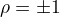
表示X Y之间有线性关系；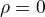
不表示X Y之间不存在相依关系 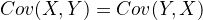
- 实际意义 刻画X Y 之间偏差的关联程度；
- 矩与协方差矩阵
- k阶原点矩：
- k阶中心矩： （方差是 2阶中心矩）
- 二维随机变量的协方差矩阵
- 技巧 圆周类的均匀分布，要以角度为单位
- 易错点 独立 不相关，相关 不独立；反之不可
5 大数定律
- 伯努利大数定律
- 辛钦大数定律
- 实质 做次实验，实验结果趋于 EX
6 中心极限定理
- 列维-林德伯格定理（独立同分布中心极限定理）
- 棣莫弗-拉普拉斯定理（n项伯努利分布）
- 实质 做次重复实验，的结果可以使用正态分布刻画
- 技巧 对于二项分布B(n, p)，做n次重复实验，事件A发生次数的最大可能值为：
- (n+1)p为整数，
- (n+1)p为偶数，
7 数理统计
- 样本数字特征
- 样本均值
- 样本方差
- 样本k阶原点矩
- 样本k阶中心矩
- 第k顺序量 将样本值按从小到大的顺序排列，其中
- 常用统计量的性质（通用）
- 分布（取上分位）
- 相互独立，服从标准正态分布，服从分布
- 自由度 和式中独立变量的个数
- EX = n；DX = 2n
- t 分布（取上分位）
- ，X Y相互独立，
- 图像关于 x=0 对称，EX=0
- F 分布
- 若，那么 （使用公式证明）
- 单正态总体（服从）
- 相互独立，
- 双正态总体
- 统计量 不含任何未知参数的样本函数
8 参数估计
- 矩估计法 求
- 最大似然估计法 通过样本观测值估计概率最大的参数作为估计值。可以通过求最大似然函数，确定参数的估计值，这个参数需要使最大似然函数值最大
- 估计标准 无偏性 有效性 一致性（相合性）
- 置信区间